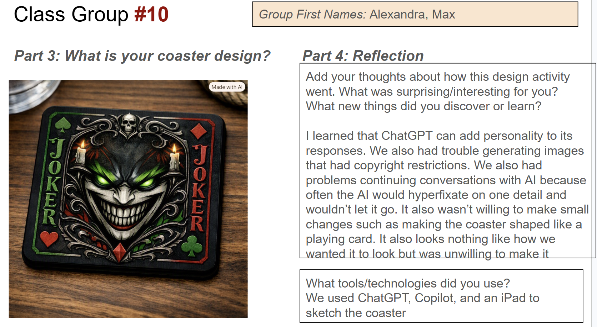

Class Group #10
Our coaster design used a Joker-inspired aesthetic with dark colors, glowing green details, and a dramatic face pattern. The final concept combined a bold graphic style with a functional, easy-to-use coaster that felt unique and memorable.
I learned that ChatGPT can add personality to its responses. We also had trouble generating images that had copyright restrictions. We also had problems continuing conversations with AI because it often would hyperfixate on one detail and wouldn’t let it go. It also wasn’t willing to make small changes such as making the coaster shaped like a playing card.
What tools/technologies did you use? We used ChatGPT, Copilot, and an iPad to sketch the coaster.